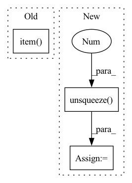

Pattern ID :20108
Before Change
logit = self.affine(hid.squeeze(1))
posterior = F.softmax(logit, dim=1)
wav = torch.multinomial(posterior, 1).squeeze(1)
wavs[:, i] = 2 * wav.item() / (self.quant_dim - 1.0) - 1.0
mu = self.quant_dim - 1
wavs = torch.sign(wavs) / mu * ((1 + mu) ** torch.abs(wavs) - 1)After Change
mel_embs = []
for mel in mels:
mel = mel.unsqueeze(0 )
mel_emb, _ = self.mel_rnn(mel)
mel_emb = mel_emb.squeeze(0)
mel_embs.append(mel_emb)
In pattern: SUPERPATTERN
Frequency: 4
Non-data size: 3
Instances Fragment ID: 65808345
Project Name: yistlin/universal-vocoder
Commit Name: a2f043170a0335459db6b45b7d8dc692db9a00f5
Time: 2020-10-06
Author: yishen992@gmail.com
File Name: models/universal_vocoder.py
M Class Name: UniversalVocoder
N Class Name: UniversalVocoder
M Method Name: generate(2)
N Method Name: generate(2)
M Parent Class: nn.Module
N Parent Class: nn.Module
M File Name: models/universal_vocoder.py
N File Name: models/universal_vocoder.py
M Start Line: 58
M End Line: 88
N Start Line: 63
N End Line: 120
Before Change
output_prediction += output
if is_segmentation:
output_prediction = aggregator.get_output_tensor().cpu().data.item()
// reverse one-hot encoding of "output_prediction" will probably be needed for segmentation
else:
output_prediction = output_prediction / (len(patch_loader) + current_patch) // final regression output
After Change
output_prediction = output_prediction / len(patch_loader) // final regression output
// this is currently broken
label_ground_truth = one_hot(label_ground_truth.unsqueeze(0 ) , params["model"]["class_list"])
final_loss, final_metric = get_loss_and_metrics(label_ground_truth, output_prediction, params)
print("Full image validation:: Loss: ", final_loss, "; Metric: ", final_metric, flush=True)
Fragment ID: 65808346
Project Name: cbica/gandlf
Commit Name: 94bb8bc6178fec12c0b7c9966cdc5cb0e66b9b8b
Time: 2021-05-11
Author: sarthak.pati@hotmail.com
File Name: GANDLF/training_loop.py
M Class Name: AnonimousClass
N Class Name: AnonimousClass
M Method Name: validate_network(4)
N Method Name: validate_network(4)
M Parent Class:
N Parent Class:
M File Name: GANDLF/training_loop.py
N File Name: GANDLF/training_loop.py
M Start Line: 231
M End Line: 305
N Start Line: 225
N End Line: 312
Before Change
def compute_gradient(self, state_lst, action_lst, reward_lst, next_state_lst, done_lst):
final_state = torch.tensor(next_state_lst[-1], dtype=torch.float)
R = 0.0 if done_lst[-1] else self.v(final_state).item()
td_target_lst = []
for reward in reward_lst[::-1]:
R = self.args["gamma"] * R + reward
td_target_lst.append([R])After Change
action = torch.tensor(action_lst)
reward = torch.tensor(reward_lst, dtype = torch.float).unsqueeze(-1)
next_state = torch.tensor(next_state_lst, dtype = torch.float)
done = torch.tensor(done_lst, dtype = torch.float).unsqueeze(-1 )
td = reward + (1 - done) * self.args["gamma"] * self.v(next_state)
if self.args["advantage"] == True :
advantage = td - self.v(state) Fragment ID: 65808347
Project Name: seolhokim/distributedrl-pytorch-ray
Commit Name: 24173b188cfefde68f9b724d2c24ac5c6cbd722a
Time: 2021-06-05
Author: kilmya1@naver.com
File Name: agents/algorithms/actor_critic.py
M Class Name: ActorCritic
N Class Name: ActorCritic
M Method Name: compute_gradient(6)
N Method Name: compute_gradient(6)
M Parent Class: nn.Module
N Parent Class: nn.Module
M File Name: agents/algorithms/actor_critic.py
N File Name: agents/algorithms/actor_critic.py
M Start Line: 35
M End Line: 47
N Start Line: 31
N End Line: 39
Before Change
predictions = self.model(token_tensor)
// convert results to tags
top_predictions = predictions.argmax(-1)
predicted_tags = [self.data.tag_field.vocab.itos[t.item() ] for t in top_predictions]
// print inferred tags
max_len_token = max([len(token) for token in tokens] + [len("word")])
max_len_tag = max([len(tag) for tag in predicted_tags] + [len("pred")])After Change
token_tensor = torch.as_tensor(numericalized_tokens)
token_tensor = token_tensor.unsqueeze(-1).to(self.device)
char_tensor = torch.as_tensor(numericalized_chars)
char_tensor = char_tensor.unsqueeze(0 ) .to(self.device)
predictions, _ = self.model(token_tensor, char_tensor)
// convert results to tags
predicted_tags = [self.data.tag_field.vocab.itos[t] for t in predictions[0]] Fragment ID: 65808342
Project Name: yoseflaw/nerindo
Commit Name: a70e55e7c0489cba1290ebd51512a9e878c6e0ed
Time: 2020-08-09
Author: yosefardhitowin@gmail.com
File Name: nerindo/trainer.py
M Class Name: Trainer
N Class Name: Trainer
M Method Name: infer(3)
N Method Name: infer(3)
M Parent Class: object
N Parent Class: object
M File Name: nerindo/trainer.py
N File Name: nerindo/trainer.py
M Start Line: 88
M End Line: 100
N Start Line: 184
N End Line: 205